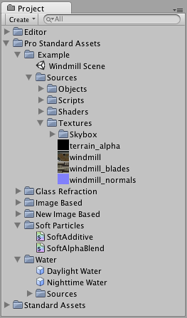

Thank you for helping us improve the quality of Unity Documentation. Although we cannot accept all submissions, we do read each suggested change from our users and will make updates where applicable.
For some reason your suggested change could not be submitted. Please try again in a few minutes. And thank you for taking the time to help us improve the quality of Unity Documentation.
A large part of making a game is utilizing your asset source files in your GameObjects. This goes for textures, models, sound effects and behaviour scripts. Using the Project View inside Unity, you have quick access to all the files that make up your game:

The Project View displays all source files and created Prefabs
This view shows the organization of files in your project’s Assets folder. Whenever you update one of your asset files, the changes are immediately reflected in your game!
To import an asset file into your project, move the file into (your Project folder)->Assets in the Finder, and it will automatically be imported into Unity. To apply your assets, simply drag the asset file from the Project View window into the Hierarchy or Scene View. If the asset is meant to be applied to another object, drag the asset over the object.
Hints
It is always a good idea to add labels to your assets when you are working with big projects or when you want to keep organized all your assets, with this you can search for the labels associated to each asset in the search field in the project view.
When backing up a project folder always back up Assets, ProjectSettings and Library folders. The Library folder contains all meta data and all the connections between objects, thus if the Library folder gets lost, you will lose references from scenes to assets. Easiest is just to back up the whole project folder containing the Assets, ProjectSettings and Library folders.
Rename and move files to your heart’s content inside Project View; nothing will break.
Never rename or move anything from the Finder or another program; everything will break. In short, Unity stores lots of metadata for each asset (things like import settings, cached versions of compressed textures, etc.) and if you move a file externally, Unity can no longer associate metadata with the moved file.